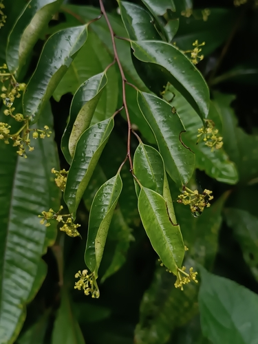

Phyllonomaceae
The Phyllonomaceae family is a small, intriguing family of flowering plants belonging to the order Aquifoliales. It contains just one genus, Phyllonoma, with about 4-5 species of shrubs or small trees native to the Neotropics (Mexico south to Peru and Bolivia). The family is most remarkable for its highly unusual characteristic of bearing inflorescences directly on the upper surface of the leaf blade (epiphyllous inflorescences).
Overview
Phyllonomaceae stands out in the plant kingdom due to the unique placement of its flowers and fruits. Instead of arising from axils or stem tips, the inflorescences in Phyllonoma emerge from the midrib on the upper surface of the leaf, typically near the leaf apex. This rare condition, known as epiphylly, makes the family easily recognizable when flowers or fruits are present.
The single genus, Phyllonoma, consists of shrubs and small trees found primarily in montane forest habitats from southern Mexico through Central America to the Andes in South America (reaching Peru and Bolivia). They have simple, alternate leaves with toothed margins. The small, greenish-yellow flowers develop into dark berries, also borne directly on the leaf surface.
Phylogenetically, Phyllonomaceae is placed in the order Aquifoliales, closely related to the well-known Aquifoliaceae (Holly family) and the Old World family Helwingiaceae, which independently evolved a similar (though not identical) epiphyllous condition.
Quick Facts
- Scientific Name: Phyllonomaceae
- Common Name: (None widely established)
- Number of Genera: 1 (Phyllonoma)
- Number of Species: Approximately 4-5
- Distribution: Neotropics: Mexico south to Peru and Bolivia (montane forests).
- Evolutionary Group: Eudicots - Asterids - Campanulids - Aquifoliales
Key Characteristics
Growth Form and Habit
Plants are shrubs or small trees.
Leaves
Leaves are alternate, simple, and petiolate. The leaf margins are typically serrated or dentate (toothed). Small stipules are present but often caducous (falling off early).
Inflorescence
The most distinctive feature: Inflorescences (small cymes or fascicles) are epiphyllous, arising directly from the adaxial (upper) surface of the leaf blade, usually near the apex along the midrib. This means flowers and subsequent fruits appear to sit on top of the leaf.
Flowers
Flowers are small, actinomorphic (radially symmetrical), and typically bisexual. Key features include:
- Calyx: Consists of 4-5 sepals, shortly fused at the base.
- Corolla: Consists of 4-5 petals, which are free and typically greenish-yellow.
- Androecium: Features 4-5 stamens, alternating with the petals. Filaments are attached near the base of the petals or to the nectar disc.
- Gynoecium: Features an inferior or semi-inferior ovary composed of 2 fused carpels. The ovary is unilocular with parietal placentation (ovules on the ovary wall) or may appear 2-locular near the base. Ovules are several to many. The style is short with a 2-lobed stigma. A prominent nectar disc surrounds the base of the style.
Fruits and Seeds
The fruit is a fleshy berry, typically globose and maturing to a dark purple or black color. It contains several small seeds.
Chemical Characteristics
Limited information is available, but the family likely shares chemical characteristics, such as the presence of certain iridoids or saponins, with other members of the Aquifoliales order.
Field Identification
Identifying Phyllonomaceae (the genus Phyllonoma) is straightforward if reproductive structures are present, due to the unique epiphyllous condition:
Primary Identification Features
- Epiphyllous Inflorescences/Fruits: The absolute key feature – look for clusters of small flowers or dark berries borne directly on the upper surface of the leaf blade, usually near the tip along the midrib.
- Habit: Shrubs or small trees.
- Leaves: Alternate, simple, with serrated/toothed margins.
- Flowers: Small, 4-5 parted (sepals, petals, stamens), greenish-yellow.
- Ovary: Inferior or semi-inferior.
- Fruit: A small berry (dark purple/black).
- Location: Neotropical montane forests (Mexico to Andes).
Secondary Identification Features
- Small stipules present (may have fallen).
- Prominent nectar disc in flower.
Seasonal Identification Tips
- The epiphyllous flowers or fruits make identification definitive whenever they are present. Flowering/fruiting times vary with species and location.
- Vegetative identification relies on recognizing shrubs/trees with alternate, simple, serrated leaves in the appropriate habitat and range, pending confirmation with reproductive structures.
Common Confusion Points
The epiphyllous condition is extremely rare in flowering plants, making Phyllonomaceae highly distinctive:
- Helwingiaceae: Another family in Aquifoliales (but found in Asia) that also exhibits epiphyllous inflorescences. Helwingiaceae differs in being dioecious (separate male and female plants) and having drupes, not berries.
- Other Neotropical shrubs/trees: Vegetatively, Phyllonoma could resemble various unrelated plants with similar leaves. However, no other family in the Neotropics commonly displays flowers/fruits directly on the leaf blade surface like Phyllonomaceae. Careful observation for the epiphyllous structures is paramount.
Field Guide Quick Reference (Phyllonoma / Phyllonomaceae)
Look For (in Neotropics):
- Flowers/Fruits ON the leaf surface (upper side)
- Shrub or small tree
- Leaves: Alternate, simple, serrated
- Flowers: Small, 4-5 parts
- Ovary: Inferior / semi-inferior
- Fruit: Berry (dark)
Key Distinctions:
- Epiphyllous inflorescence is diagnostic in Neotropics
- Different from Helwingiaceae (distribution, sexual system, fruit type)
- Vegetative characters + epiphyllous trait confirm ID
Notable Examples
The family contains only the genus Phyllonoma:

Phyllonoma spp.
This genus comprises all members of the Phyllonomaceae family (about 4-5 species). They are shrubs or small trees distributed in montane cloud forests from Mexico to Bolivia. Their defining characteristic is the development of inflorescences, flowers, and ultimately berries directly on the upper surface of the leaf blade, a rare phenomenon known as epiphylly.
Phylogeny and Classification
Phyllonomaceae is placed in the order Aquifoliales, which belongs to the Campanulid clade within the Asterids. Molecular phylogenetics firmly establishes Aquifoliales as a distinct order, separate from groups it was historically associated with.
Within Aquifoliales, Phyllonomaceae is closely related to the other two core families: Aquifoliaceae (Holly family) and Helwingiaceae. Together, these three families form a well-supported clade. Phyllonomaceae and Helwingiaceae are particularly interesting as both independently evolved the rare trait of epiphyllous inflorescences, although the developmental pathways might differ. The order Aquifoliales itself is sister to the large Asterales order within the Campanulids.
Position in Plant Phylogeny
- Kingdom: Plantae
- Clade: Angiosperms (Flowering plants)
- Clade: Eudicots
- Clade: Asterids
- Clade: Campanulids
- Order: Aquifoliales
- Family: Phyllonomaceae
Evolutionary Significance
Phyllonomaceae, despite its small size, is evolutionarily significant:
- It showcases the rare and fascinating phenomenon of epiphyllous inflorescences, providing a system to study the developmental genetics and evolution of this trait.
- Its phylogenetic position within Aquifoliales helps to understand the relationships and diversification within this order and the broader Campanulid clade.
- Its restricted Neotropical montane distribution offers insights into biogeographic patterns and potential relictual status.
- Comparing it with Helwingiaceae allows for studies of convergent evolution of epiphylly.